Atelier desFaçadiers, ça va barder !
Experten in der Begleitung von Fassadenmonteuren: komplette Lösungen nach Maß für die Montage von Fassadenbekleidung, bei Neubau wie bei Sanierung. Von der Dämmung über Unterkonstruktion und Verankerung bis zur Plattenbefestigung.
- QB 15Zertifizierung unserer Platten
- 2 StandorteReyrieux · Tourcoing
- +7.000 m²Produktion und Lager
- 24+Mitarbeitende, die für Sie da sind
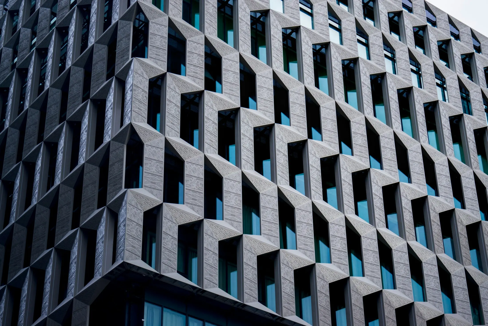
Eine gelungene Fassade wird in der Werkstatt vorbereitet, lange vor der ersten montierten Platte.
Mehr als ein Lieferant,
ein Partner.
Technischer Service, Verarbeiter und Händler: Wir begleiten Fassadenmonteure bei jedem Schritt, bei Neubau wie bei Sanierung. Unsere Überzeugung: Montagefertig verbessert die Qualität der Fassaden, verringert die körperliche Belastung und beschleunigt die Montage.
Fassadenbekleidung
Faserzement, HPL, Aluminium-Verbund, verpresste Steinwolle, Holz und Holz-Composite.
Sortiment ansehen SystemeUnterkonstruktion
InnoCLAD, InnoCLAD+, TradiCLAD, TradiCLAD+ und Unterkonstruktion nach Maß, mit Verankerungen und Dämmstoffen.
Systeme ansehen RessourcenDokumentation
Katalog 2026, Anfrage zur Unterkonstruktionsplanung, Optimierungsanfrage, Zulassungen und technische Merkblätter.
HerunterladenFünf Schichten,
ein Ansprechpartner.
Von der Dämmung bis zur Plattenbefestigung, über Unterkonstruktion und Verankerung: Wir liefern, bearbeiten und beraten für jede Schicht.
- 01Tragwand
Beton, Mauerwerk oder Holzbau: der Untergrund, der die Fassade aufnimmt.
- 02Dämmstoff
Steinwolle von Rockwool oder Ursa für optimale Wärmedämmleistung.
- 03Konsolen und Unterkonstruktion
InnoCLAD (Aluminium), InnoCLAD+ (von Decke zu Decke), TradiCLAD (Stahl / Holz), TradiCLAD+ (verzinkter Stahl) oder nach Maß. Statische Berechnungen und Auszugsversuche.
- 04Hinterlüftungsebene
Der Zwischenraum, der die hinterlüftete Fassade ausmacht: Die Luft zirkuliert hinter den Platten, die Feuchtigkeit wird abgeführt.
- 05Fassadenplatten
Faserzement, Kompakt-HPL, Aluminium-Verbund, verpresste Steinwolle, Holz: mit sichtbarer oder verdeckter Befestigung, in der Werkstatt nach Maß bearbeitet.
Scrollen Sie, um die Fassade zu zerlegen ↓
Vom Lager bis zur Montage
ist alles bereit.
Lager, Beratung, Logistik, Bearbeitung und technischer Service: eine Werkstatt, die Baustellen so vorbereitet, dass die Montage schneller geht.
 01 – Lager
01 – LagerMit unserem Lager stehen Ihre Baustellen in den Startlöchern!
Ein breites Sortiment an Fassadenplatten und -systemen, schnell verfügbar: Flexibilität für den Start wie für den Abschluss Ihrer Projekte.
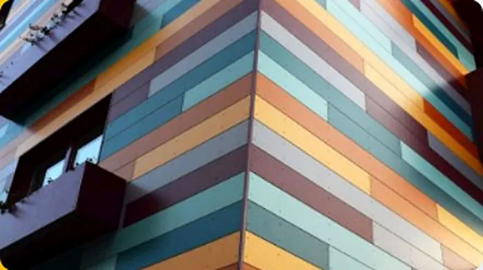
02 – BeratungDank unserer Expertise gibt es nie unangenehme Überraschungen.
Wir stellen Architekten und Bauherren die Vorzüge der hinterlüfteten Fassade vor: Energieeffizienz und Ästhetik.
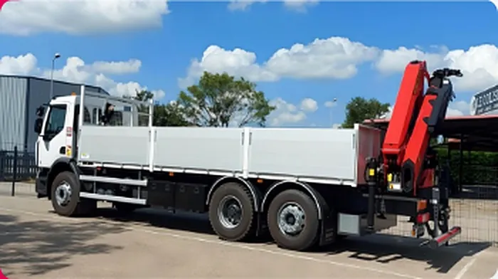
03 – LogistikSie brauchen eine Lieferung? Unser Logistikteam ist im Einsatz!
Lieferung auf die Baustelle mit Selbstentlade-Lkw, um die zurückgelegten Kilometer zu begrenzen.
 04 – Bearbeitung
04 – BearbeitungHochwertige Bearbeitung für planbare Baustellen.
Zuschnitt, Bohren, Fräsen, Nuten, Beschriftung: Faserzement, Kompakt-HPL, Aluminium-Verbund, verpresste Steinwolle.
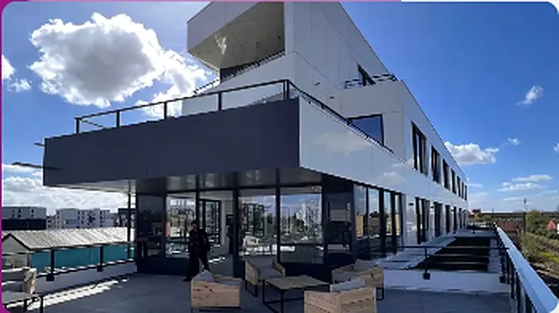
05 – Technischer ServiceEin besonderer Bedarf? Kein Grund zur Panik.
Optimierungen, kürzere Montagezeit, geringerer Verschnitt, integrierte dekorative Lösungen. Senden Sie uns Ihre DWG-Pläne.
Stellen Sie sich Ihre Fassade vor,
dann kalkulieren wir sie.
Wählen Sie eine Plattenfamilie, eine Montageart und einen Farbton: Die Vorschau wird aktualisiert, und Ihre Auswahl wird mit Ihrer Angebotsanfrage übermittelt.
Unverbindliche Farbtöne: Das komplette Sortiment (Formate, Farben, Referenzen) finden Sie im Katalog 2026. Die Platten werden nach Ihren Plänen maßgefertigt bearbeitet.
Unverbindliche Schätzung. Die präzise Plattenoptimierung erstellt unser technischer Service anhand Ihrer Pläne: Optimierungsanfrage.
Eine Organisation,
gemacht für die Baustelle.
Von der Bestellung
bis zur Lieferung.
Eine Vorbereitung in der Werkstatt, die die Zeit auf der Baustelle verkürzt, Material optimiert und Verluste begrenzt.
- Theoretische Optimierung für die Bestellung
- Beschaffung der Platten
- Eingang der Baustellenmaße
- Erstellung der Produktionsfreigabe
- Freigabe durch den Kunden
- Produktion und Lieferung
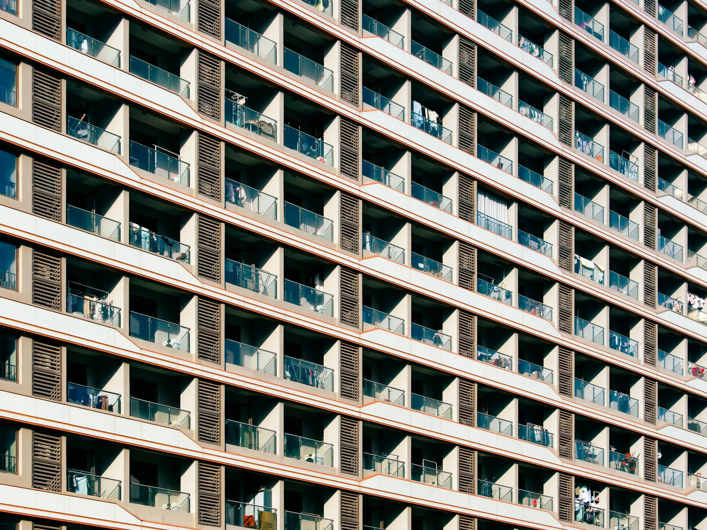
Jede Baustelle hat ihre Anforderungen. Unsere Lösungen passen sich an.
Die Unterkonstruktion
wächst.
InnoCLAD aus Aluminium, InnoCLAD+ von Decke zu Decke, TradiCLAD aus Stahl oder Holz: Systeme gemäß CSTB-Heft 3194 und den ATEC der Fassadenprodukte, mit statischen Berechnungen und Auszugsversuchen.
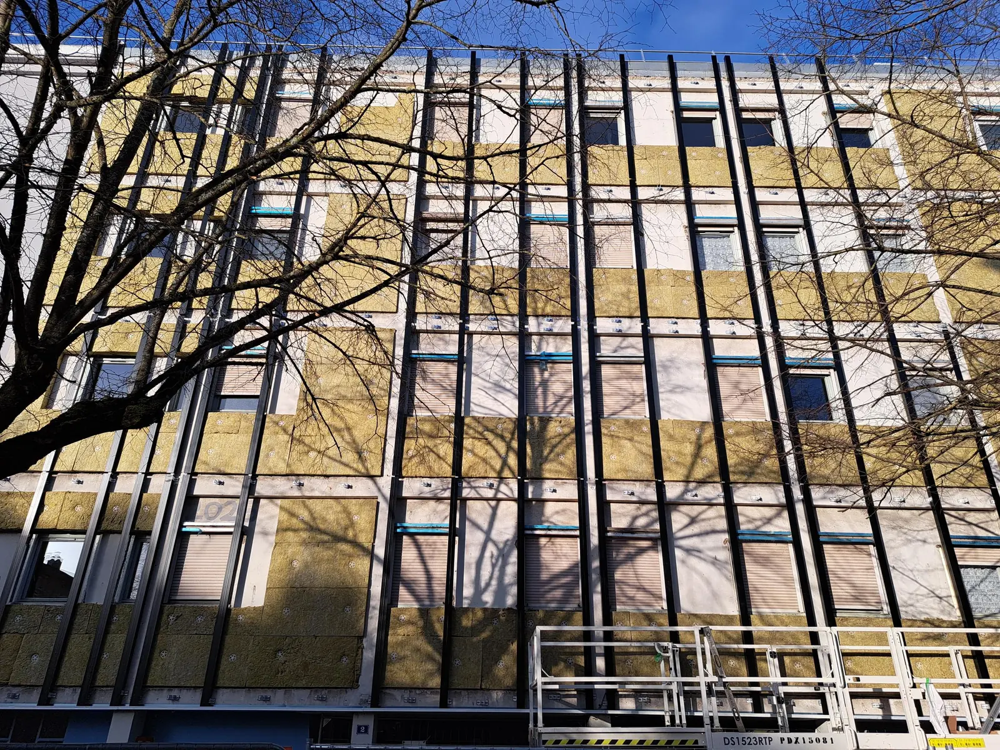
Fassaden,
die auffallen.
Wohnungen, Büros, Gewerbe- und öffentliche Gebäude: einige Baustellen, die mit unseren Platten und Unterkonstruktionen bekleidet wurden. Alle Projekte
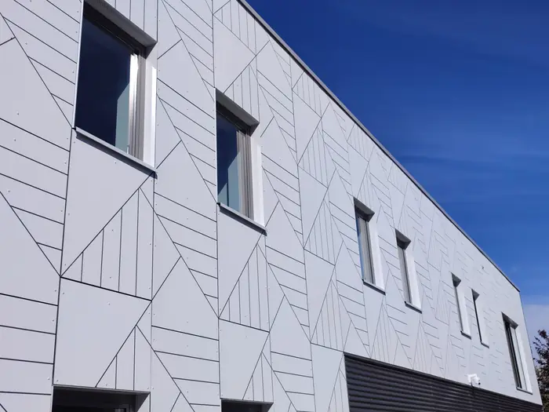
Weiße Platten mit gravierten Mustern
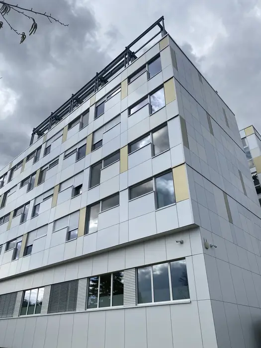
Sanierung eines Hochhauses, Plattenmosaik
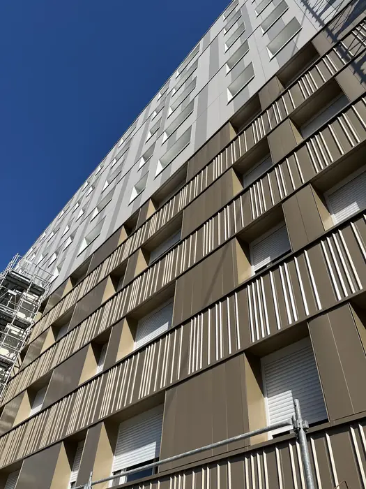
Goldfarbene Lamellen als Fassadenbänder
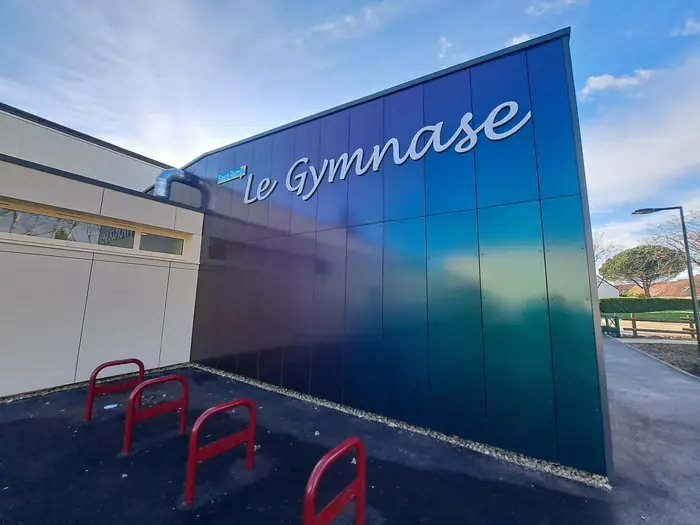
Sporthalle, Platte mit Farbverlaufseffekt
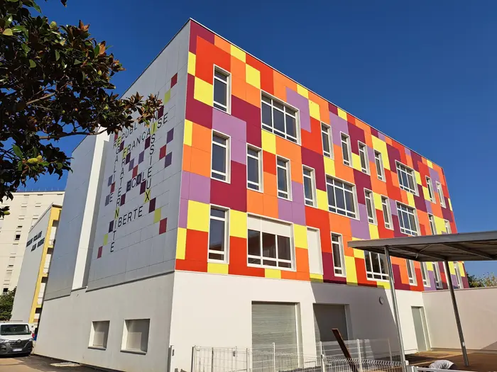
Farbmosaik
06Unterkonstruktion in der Montage
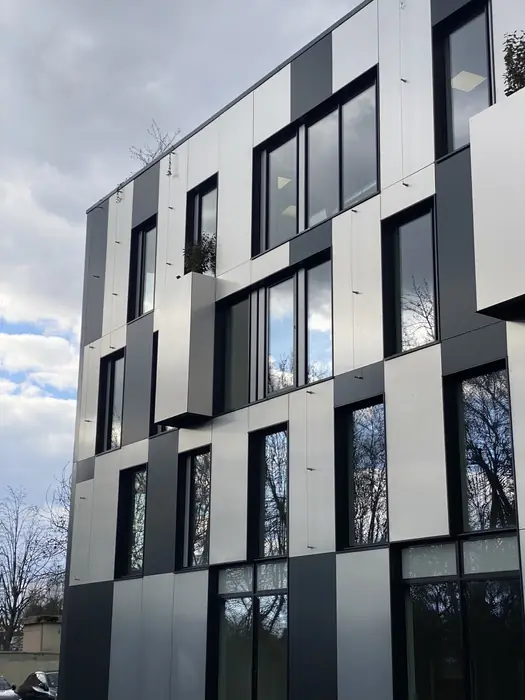
Schachbrett aus dunklen Platten
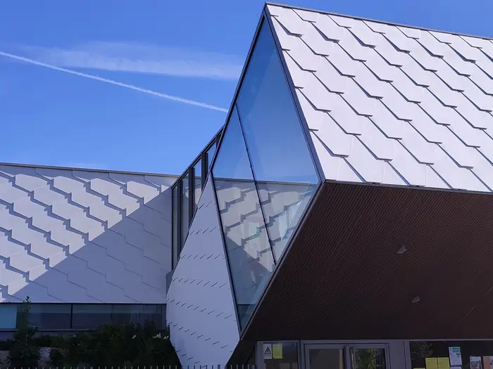
Fassade mit Schuppenstruktur, verglaste Ecke
20 BaustellenAlle
Projekte ansehen →
Neues
aus dem Atelier.
Neue Reihe EQUITONE [inspira]
Ab sofort bieten wir die neue Reihe EQUITONE [inspira] an, eine Fassadenlösung, konzipiert für …
WeiterlesenNeues Gebäude für die Unterkonstruktion
Die Unterkonstruktion wächst beim Atelier des Façadiers! Wir freuen uns, Ihnen mitzuteilen …
WeiterlesenNeuer Katalog 2026
Unser neuer Katalog ist erhältlich! Wir freuen uns, Ihnen die neue Ausgabe vorzustellen …
WeiterlesenGanz nah
an Ihren Baustellen.
Niederlassung Reyrieux
04 74 17 33 337 rue des Garennes01600 ReyrieuxIn Google Maps öffnen
Niederlassung Tourcoing
03 20 55 30 57300 rue des Trois Pierres59200 TourcoingIn Google Maps öffnen